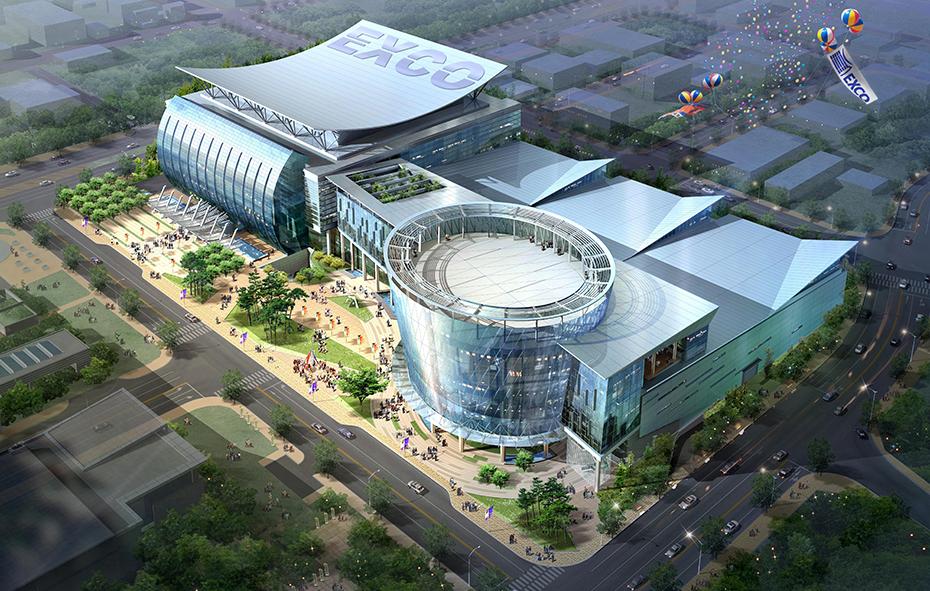
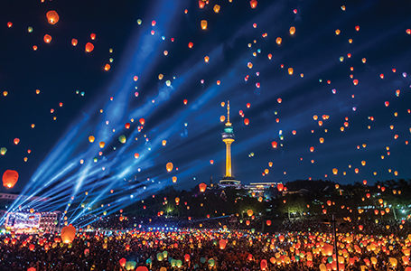
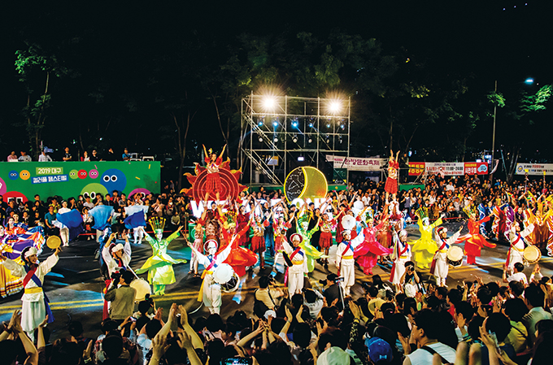
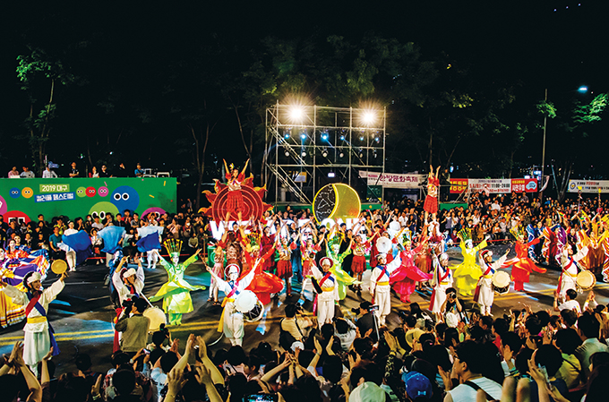

レベルの高い文化・環境都市
- Home
- 投資メリット
- 投資メリット
- レベルの高い文化・環境都市
レベルの高い文化・環境都市
レベルの高い文化・環境都市
様々な国際大会及び国際会議の誘致
- ワールドカップ総合競技場(2002年ワールドカップ、2003年夏季ユニバーシアードを成功裏に開催
- 2005年に国際会議都市へ指定
- 2010年世界消防官大会、2011年世界陸上選手権大会、2012年世界昆虫学会、2013年世界エネルギー総会を誘致
EXCO (Daegu Exhibition & Convention Center)
- 展示場稼働率の頭打ちで拡張工事中(2011年5月に開館予定)
- 位置 : 大邱広域市北区山格洞1678番地（総合流通団地内）
- 規模 : 敷地20,862平方メートル（延べ面積88,310平方メートル）、地上5階・地下4階
- 展示場11,616平方メートル（コンベンションホール3,872平方メートルを含む）、会議室12室(20室に分けて使うことも可

※ 2010年度の展示場の年間稼働率を見ると、EXCOが70％と実質的に頭打ち状態。大邱市は展示場の供給不足を解消し、大邱・慶尚北道地域の拠点都市として展示コンベンション産業のバランスの取れた発展を図るために EXCOの拡張工事を進めている。拡張規模は敷地22,152平方メートル （延べ建坪57,642平方メートル）、地上1～5階、地下2階（展示場11,100平方メートル、コンベンションホール1800平方メートル、オーディトリウム2,000平方メートル、附帯施設42,742平方メートル）
韓国の展示場現状（2010年）
| KINTEX (高陽) |
COEX (ソウル) |
BEXCO (釜山) |
EXCO (大邱) |
KDJセンター (光州) |
CECO (昌原) |
|
|---|---|---|---|---|---|---|
| 展示面積(㎡) | 53,541 | 36,007 | 26,508 | 11,616 | 9,073 | 7,827 |
| 稼働率(％) | 58 | 70 | 55 | 70 | 70 | 50 |
※ 大邱EXCOの稼働率:2003年(70％)、2004年(72％)、2005年(68％)、2006年(70.3％)、2007年72.2％）、2008(73％)、2009(67％)
低炭素・グリーン先導都市としての育成
- 世界エネルギー総会(WEC)の誘致を契機に「ソーラーシティ(Solar City)」プロジェクト(2010年からの5ヵ年計画)を推進
- 持続的なエコ都市としてのイメージの構築、「気候環境モデルタクシー」のブランド化
- 慶尚北道と共同して炭素排出取引所、温室効果ガス削減実績登録所の共同誘致など
多様な文化イベント
- 多様な地域祭り・フェスティバル : 国際オペラフェスティバル、国際ミュージカルフェスティバル(DIMF)、漢方祭り、繊維祭り(PID)
- 全国で初めて漢方特区として指定 : 350年伝統の薬零市及び薬店小路

 
